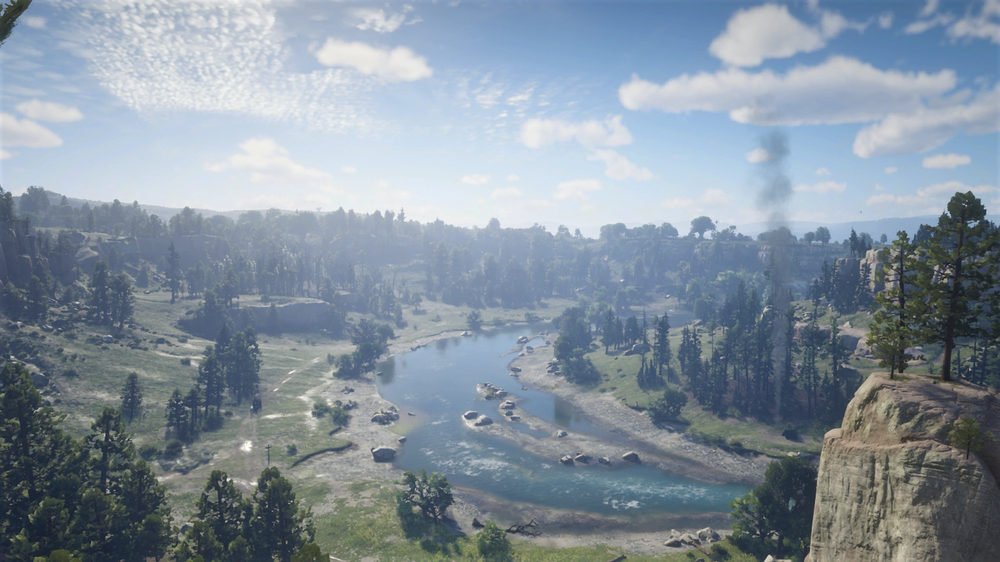
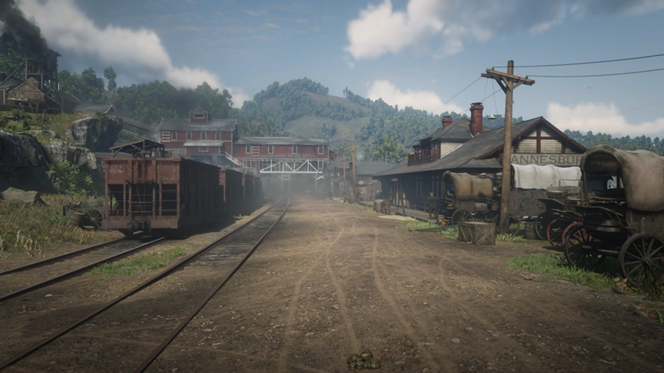

Close
NewHanover. WEBP file, Red Dead Wiki,
https://reddead.fandom.com/wiki/World_of_Red_Dead. Accessed 6 June 2025.

This is an interactive map of the named settlements in the popular game Red Dead Redemption II. Set
in the American West at the turn of the 20th century, the world of Red Dead Redemption II draws
direct inspiration from real historic locations. No settlement in Red Dead Redemption II is based on
one specific location, so this
map is my
unofficial interpretation. Explore settlements with
the interactive map or the
sidebar.
Close
Citations
- Martin, Lee. New Western Map. Lee Martin, 2018,
https://www.leemartin.com/new-western-map.
Accessed 9 June 2025.
- Cochran, Andy. A Versatile Layout for Full-Screen Maps. Medium,
2018,
https://medium.com/nyc-planning-digital/a-versatile-layout-for-full-screen-maps-229cec508b22.
Accessed 6 June 2025.
- Typodermic Fonts. Chinese Rocks. DaFont, 2002,
https://www.dafont.com/chinese-rocks.font. Accessed 6 June 2025.
- Studio Few. Hapna Slab Serif W00 DemiBold. Web Font Free, 2013,
https://www.webfontfree.com/en/download/HapnaSlabSerifW00-DemiBold. Accessed 6 June 2025.
- Impallari, Pablo. Raleway Black. Google Fonts, 2010,
https://fonts.google.com/specimen/Raleway. Accessed 6 June 2025.
- Sorkin Type. Merriweather Black. Google Fonts, 2007,
https://fonts.google.com/specimen/Merrriweather. Accessed 6 June 2025.
- Google. Noto Serif Bold Italic. Google Fonts, 2007,
https://fonts.google.com/noto/specimen/Noto+Serif. Accessed 6 June 2025.
- Kosch, Sebastian. Crimson Text Bold Italic. Google Fonts, 2010,
https://fonts.google.com/specimen/Crimson+Text. Accessed 6 June 2025.
- Maldjain, Sean. X. The Noun Project, 2020,
https://thenounproject.com/icon/x-3584118. Accessed 6 June 2025.
- Red Dead Wiki. Fandom,
https://reddead.fandom.com/wiki/Red_Dead_Wiki. Accessed 9 June 2025.
Close
Annesburg. WEBP file, Red Dead Wiki,
https://reddead.fandom.com/wiki/Annesburg. Accessed 6 June 2025.

AnnesburgBluefield, WV
A mining town established by German settlers who discovered the rich coal seams in the surrounding
hills. The surrounding countryside and waterways are sooty and polluted from the mining operations
which have been running for almost a century.
Close
Armadillo 1899. WEBP file, Red Dead Wiki,
https://reddead.fandom.com/wiki/Armadillo. Accessed 6 June 2025.

ArmadilloAmarillo, TX
This was a boomtown, with mostly wooden buildings constructed quickly by settlers heading into the
West to seek their fortunes. A recent outbreak of cholera has devastated the once prosperous town,
forcing many businesses to close their doors.
Close
Blackwater main street. WEBP file, Red Dead Wiki,
https://reddead.fandom.com/wiki/Blackwater. Accessed 6 June 2025.
BlackwaterSaint Louis, MO
This up-and-coming port city is the state capital of West Elizabeth. New businesses, citizens, and
visitors have flocked to the growing town in recent years as valuable lumber and mining concerns
have sprung up in the surrounding plains.
Close
Rhodes1899. WEBP file, Red Dead Wiki,
https://reddead.fandom.com/wiki/Rhodes. Accessed 6 June 2025.
RhodesDahlonega, GA
A prim and proper Southern town on the surface, but many residents can't
forget the Civil War or the
town's pre-war glory days, where the horrific oppression of the slave trade made white landowners
rich. Racial tensions, corruption, and old family feuds run deep.
Close
SainDenis. WEBP file, Red Dead Wiki,
https://reddead.fandom.com/wiki/Saint_Denis. Accessed 6 June 2025.

Saint DenisNew Orleans, LA
A lively, 200-year-old melting-pot city where industry magnates, socialites, traders, sailors,
workers, beggars, and thieves all live side by side. With good rail, road, and river connections for
sugar, cotton, and other commodities trading, and a new electric power plant, business is booming.
Close
rdr2-town-of-strawberry. AVIF file, Gamerant,
https://gamerant.com/red-dead-redemption-2-mayor-timmins-strawberry-dark-secret. Accessed 6 June
2025.

StrawberryPlacerville, CA
Until recently, this mountain town was little more than a base camp for lumberjacks and hunters, but
more settlers and visitors have arrived as the local logging industry continues to grow. A small,
isolated community of honest working folk.
Close
Tumbleweedrdr2. WEBP file, Red Dead Wiki,
https://reddead.fandom.com/wiki/Tumbleweed. Accessed 6 June 2025.
TumbleweedTombstone, AZ
A once bustling New Austin town that has been on the decline ever since they built the railroad to
nearby Armadillo, Tumbleweed is dominated by the overbearing and draconian Sheriff Freeman who
dispenses frontier justice very forcefully.
Close
Valentinemainstreet. WEBP file, Red Dead Wiki,
https://reddead.fandom.com/wiki/Valentine. Accessed 6 June 2025.
ValentineCheyenne, WY
A rough, raucous, hard-working town that provides livestock at auction to Heartlands landowners, and
rest and refreshment to thirsty cowboys. It's nicknamed "Mudtown" because the streets, buildings,
and most of the residents are rarely clean.
Close
Van Horn. WEBP file, Red Dead Wiki,
https://reddead.fandom.com/wiki/Van_Horn_Trading_Post. Accessed 6 June 2025.
Van Horn Trading PostNatchez, MS
This unwelcoming, rough-and-tumble port town has seen better days. Its founders intended it to be a
hub of commerce and trading, but these days it attracts more outlaws and delinquents than honest
traders.